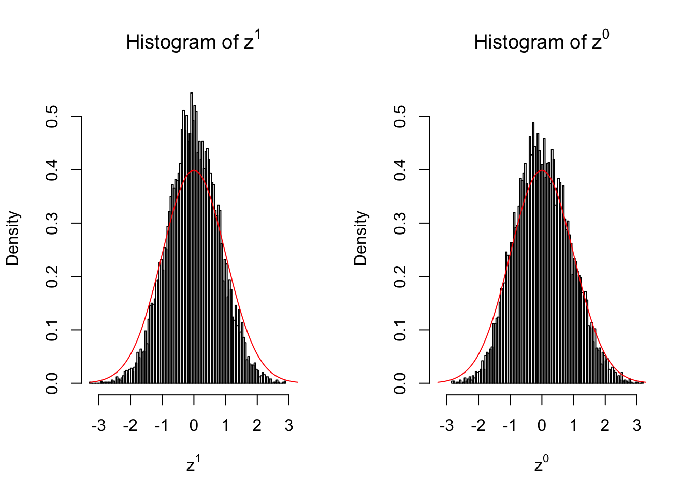
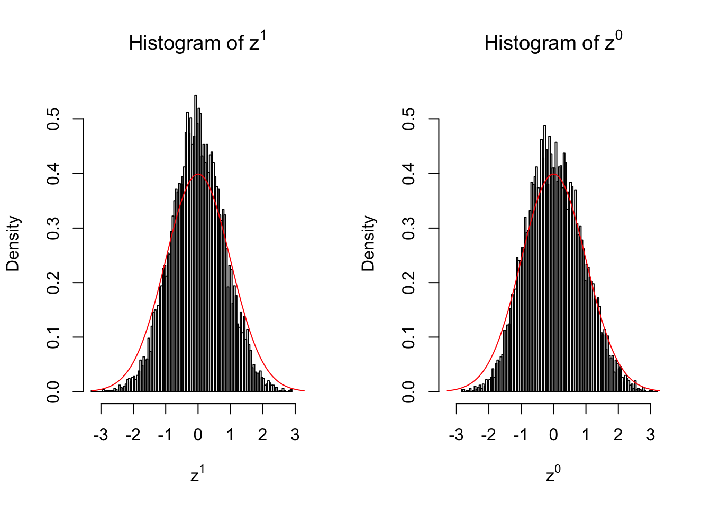

Creating Null
Lei Sun
2017-05-08
Last updated: 2017-11-05
Code version: 3d1d0fb
Introduction
In many of his seminal papers on simultaneous inference, for example, Efron et al 2001, Efron used some techniques to create null from the raw data. One big concern of this approach is whether the created null could successfully remove the effects of interest whereas keep the distortion due to correlation. Let’s take a look.
Suppose in a simplified experiment, we have a data matrix \(X_{N \times 2n} = \left\{X_1, \ldots, X_n, X_{n + 1}, \ldots, X_{2n}\right\}\), \(n\) columns of which, \(\left\{X_1, \ldots, X_n\right\}\), are controls and \(n\) columns, \(\left\{X_{n + 1}, \ldots, X_{2n}\right\}\), are cases. We can obtain \(N\) \(z\) scores, called \(z^1\), from this experimental design.
On the other hand, if we re-label case and control, and let \(\left\{X_1, \ldots, X_{n/2}, X_{n + 1}, \ldots, X_{3n / 2}\right\}\) be the controls and \(\left\{X_{n / 2 + 1}, \ldots, X_{n}, X_{3n / 2 + 1}, \ldots, X_{2n}\right\}\) the cases, we can obtain another \(N\) \(z\) scores, called \(z^0\), from this shuffled experimental design.
Our hope is that \(z^0\) will make the effects part in \(z^1\) to be \(0\), and only keep the correlation-induced inflation or deflation parts.
Here is a way to check this. Suppose there is no difference between the conditions in cases and controls, then the effects part in \(z^1\) should be \(0\) anyway. Therefore, we may check if \(z^0\) and \(z^1\) have the same empirical distribution distorted by correlation.
library(limma)
library(edgeR)
library(qvalue)
library(ashr)
r = read.csv("../data/liver.csv")
r = r[, -(1 : 2)] # remove gene name and description
#extract top g genes from G by n matrix X of expression
top_genes_index = function(g, X) {
return(order(rowSums(X), decreasing = TRUE)[1 : g])
}
lcpm = function (r) {
R = colSums(r)
t(log2(((t(r) + 0.5) / (R + 1)) * 10^6))
}
Y = lcpm(r)
subset = top_genes_index(10000, Y)
Y = Y[subset,]
r = r[subset,]counts_to_z = function (counts, condition) {
design = stats::model.matrix(~condition)
dgecounts = edgeR::calcNormFactors(edgeR::DGEList(counts = counts, group = condition))
v = limma::voom(dgecounts, design, plot = FALSE)
lim = limma::lmFit(v)
r.ebayes = limma::eBayes(lim)
p = r.ebayes$p.value[, 2]
t = r.ebayes$t[, 2]
z = sign(t) * qnorm(1 - p/2)
return (z)
}We are looking at \(3\) cases with different case-control sample sizes: \(n = 2\), \(n = 10\), \(n = 50\).
2 vs 2
10 vs 10
50 vs 50
 

Conclusion
Larger sample size doesn’t make the empirical distribution of correlated \(z\) scores closer to \(N\left(0, 1\right)\).
Merely changing the labels of the null data could generate starkly different empirical distributions of \(z\) scores, no matter what sample size \(n\) is, although as \(n\) gets larger, the difference in the empirical distributions of \(z^1\) and \(z^0\) seems to get smaller.
Therefore, creating null through various resampling schemes is basically impossible for this application.
Session Information
sessionInfo()R version 3.4.1 (2017-06-30)
Platform: x86_64-apple-darwin15.6.0 (64-bit)
Running under: macOS Sierra 10.12.6
Matrix products: default
BLAS: /Library/Frameworks/R.framework/Versions/3.4/Resources/lib/libRblas.0.dylib
LAPACK: /Library/Frameworks/R.framework/Versions/3.4/Resources/lib/libRlapack.dylib
locale:
[1] en_US.UTF-8/en_US.UTF-8/en_US.UTF-8/C/en_US.UTF-8/en_US.UTF-8
attached base packages:
[1] stats graphics grDevices utils datasets methods base
loaded via a namespace (and not attached):
[1] compiler_3.4.1 backports_1.1.0 magrittr_1.5 rprojroot_1.2
[5] tools_3.4.1 htmltools_0.3.6 yaml_2.1.14 Rcpp_0.12.12
[9] stringi_1.1.5 rmarkdown_1.6 knitr_1.16 git2r_0.19.0
[13] stringr_1.2.0 digest_0.6.12 workflowr_0.7.0 evaluate_0.10.1This R Markdown site was created with workflowr